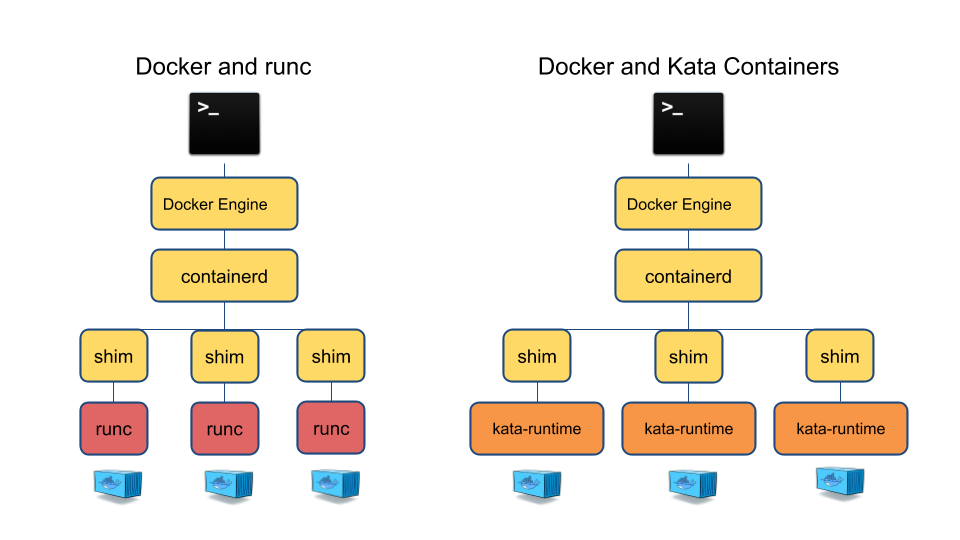

K8S 1.20 版本发布后，即将废弃对Docker的支持。
概念介绍
cri（Container runtime interface）
cri is a containerd plugin implementation of Kubernetes container runtime interface（CRI）.
cri是Kubernetes的容器运行时接口的容器插件实现。

containerd
containerd is an industry-standard（行业标准） container runtime with an emphasis（重点） on simplicity（简单性）,robustness（健壮性） and portability（可移植性）.
containerd完全支持运行容器的CRI规范。
cri是containerd 1.1以上的版本的原生插件。它内置于containerd并默认启用。
oci（Open Container Initiative）
项目地址
oci是由多家公司成立的项目，并由linux基金会进行管理，致力于container runtime 的标准的制定和runc的开发等工作。
cri-o
OCI-based implementation of Kubernetes Container Runtime Interface.
Kubernetes 为了兼容cri和oci孵化了项目cri-o。为了架设在cri和oci之间的桥梁。因此cri-o即兼容cri插件实现又兼容oci的容器运行时标准。
runc
runc is a CLI tool for spawning and running containers according to the oci specification.
runc，是对oci标准的一个参考实现，是一个可以用于创建和运行容器的CLI（Command Line Interface）工具。
参考资料
kata
kata containers是由OpenStack基金会管理，但独立于OpenStack项目之外的容器项目。它是一个可 以使用容器镜像以超轻量级虚机的形式创建容器的运行时工具。 kata containers整合了Intel的 Clear Containers 和 Hyper.sh 的 runV，能够支持不同平台的硬件 （x86-64，arm等），并符合OCI(Open Container Initiative)规范，同时还可以**兼容k8s的 CRI（Container Runtime Interface）接口规范。
kata和传统容器对比
kata and docker

kata in kubernetes
环境说明
本例使用三台CentOS虚拟机进行部署，CentOS版本：CentOS Linux release 7.3.1611 (Core)，内核版本：3.10.0-514.el7.x86_64。
| 主机名 | IP地址 |
|---|---|
| K8S-194 | 10.6.6.194 |
| K8S-195 | 10.6.6.195 |
| K8S-196 | 10.6.6.196 |
基础部署
SSH免密登陆
这里简化一下免密登陆的设置步骤，统一使用相同的公钥、私钥。
1 | ssh-keygen //生成公私钥对 |
然后将~/.ssh目录下id_rsa id_rsa.pub分发给另外两台主机
1 | scp id_rsa id_rsa.pub authorized_keys root@10.6.6.195:~/.ssh |
将hostname追加到三台机器的/etc/hosts中
1 | 10.6.6.194 K8S-194 |
至此，可实现三台机器互相的免密登陆。
NTP对时
CentOS系统中，已经带有ntpd的服务，只需要修改配置文件。
1 | //以10.6.6.194的时间为基准同步，在10.6.6.194上配置ntpd的配置文件 |
系统设置
关闭selinux
1 | vim /etc/selinux/config |
关闭防火墙
1 | systemctl stop firewalld.service |
关闭swap
1 | swappoff -a |
Sealos部署K8S
官方安装步骤
1 | wget -c https://sealyun.oss-cn-beijing.aliyuncs.com/latest/sealos && \ |
官方要求的注意事项。本次部署并没有严格遵守，实际使用应该严格遵守，而且Kubernetes 1.20.0的版本不建议上生产环境
- 必须同步所有服务器时间
- 所有服务器主机名不能重复
- 系统支持：centos7.6以上 ubuntu16.04以上
- 内核推荐4.14以上， 系统推荐：centos7.7
架构图